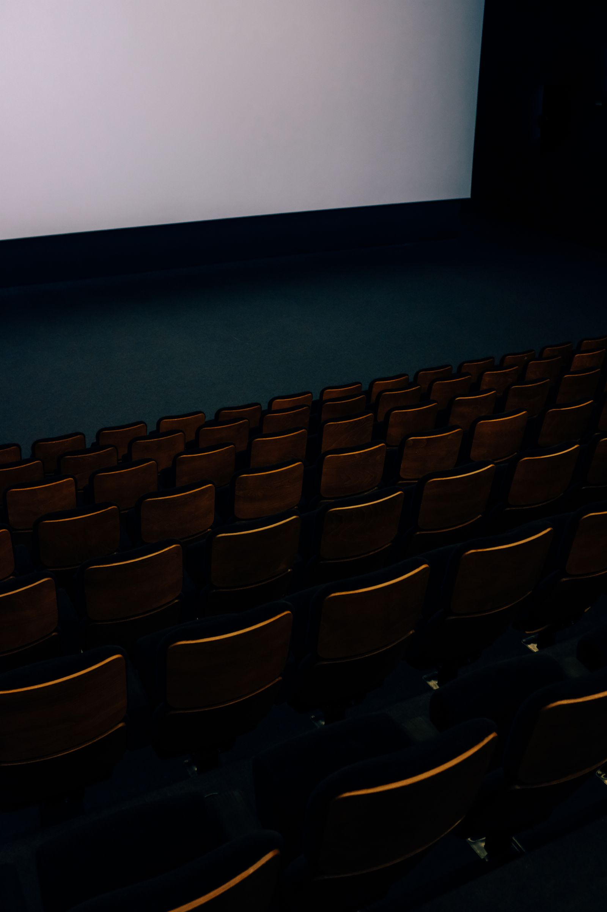

ЧЕТЫРЕ СЕАНСА КАЖДЫЙ ДЕНЬ
54 МЕСТА.
ОДИН
ЭКРАН.
Шесть фильмов в программе: игровые и документальные. Первый сеанс в 12:20, последний — в 20:20. Места выбираете сами.
↓
ТИШИНА ПЕРЕД СЕАНСОМ / ОРБИТА01 / ПРОГРАММА
НА ЭКРАНЕ✳
Выбирайте дату, находите фильм и занимайте свои места. В нашей программе каждый вечер — отдельная история.
На этот день фильмов выбранного жанра нет. Попробуйте другой фильтр.
02 / НАШ ЗАЛ
ШЕСТЬ РЯДОВ.
ДЕВЯТЬ МЕСТ
В КАЖДОМ.
Места A1–F9, проход по центру фойе, один экран. У задних рядов больше пространства для ног; у первых — полное погружение в кадр. Цена зависит от ряда.
- 54
- места
- 06
- рядов
- 09
- мест в ряду
ЭКРАН
ПЕРВЫЙ РЯД — А / ПОСЛЕДНИЙ — F
03 / ВАШИ ПОКАЗЫ
МОИ БИЛЕТЫ✳
Сохранённые места остаются в этом браузере. Их можно скачать или освободить.
ВСТРЕТИМСЯ
ПОСЛЕ ТИТРОВ.